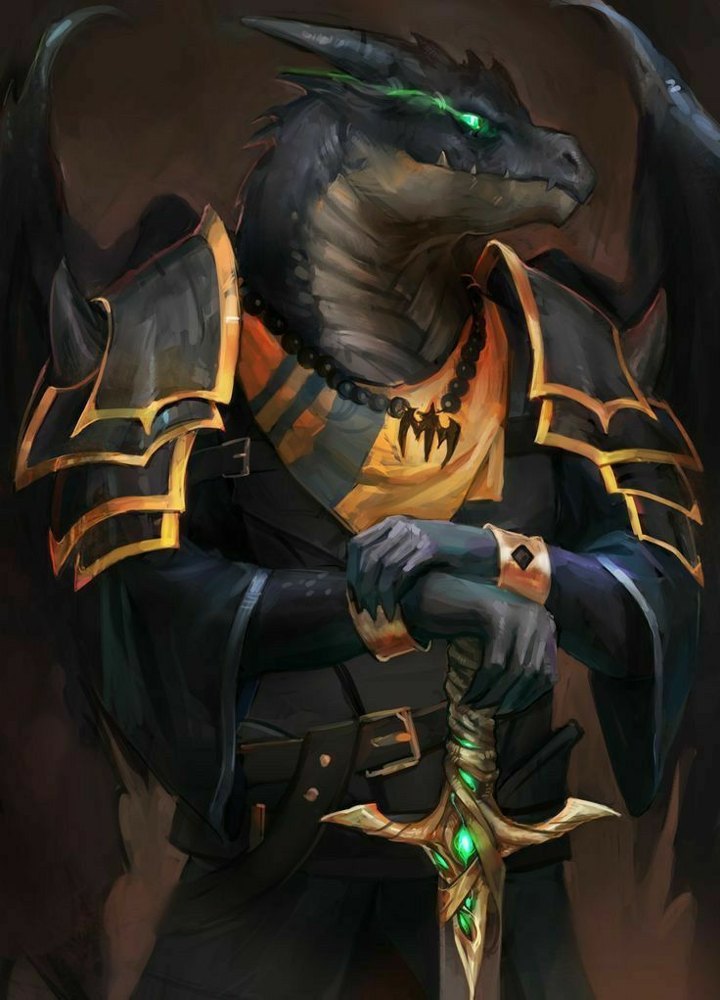
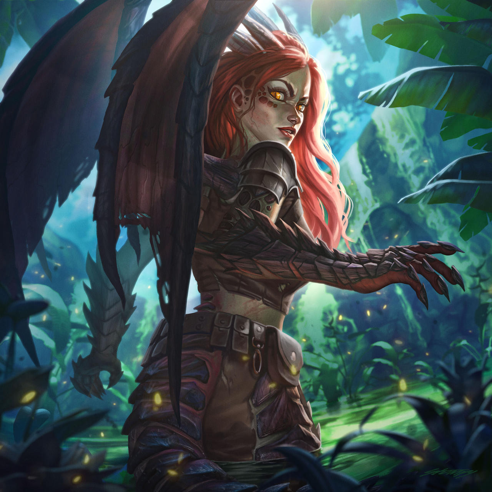

Force
Résistance
Dextérité
Magie
Ingénierie
Environnement : L'île de Drakstoh, au nord des Terres d'Origine - Kalern
Durée de vie moyenne : 250 ans
Taille : M
Système politique : Roi choisi par vote des généraux
Statut politique : -
Relations hostiles : Elfes
Alliés : -
Croyance : Desiryn
Force
Résistance
Dextérité
Magie
Ingénierie
Capacités innées : Naturellement résistant au feu et à la chaleur - Certains possèdent des ailes qui leur permettent de voler
Facilités magiques : Magies des éléments (feu et vent notamment) - Force brute
Impossibilités : Magies liées à l'eau - Métamorphose en dragon
Suite à la déception d'une partie des elfes envers Ysiiri, et au départ de certains d'entre eux, un second groupe d'oreilles pointues se divisa et migra vers le nord, en quête de réponses.
Après avoir atteind la côte nord des Terres d'origine, ces derniers prirent possession d'une île par delà les vagues, dont le coeur, un volcan, semblait en décalage de la végétation luxuriante et de son climat tropical. Non loin de celui-ci gisait le squelette géant d'un dragon, à l'intérieur duquel les nouveaux venus bâtirent leur propre cité. Cependant, bien que le dragon soit mort depuis bien longtemps, sa magie, elle, résidait encore en ce lieu. Vivant et grandissant sur cette source de magie abondante, les exilés s'imprégnèrent de cette puissance sans s'en rendre compte, et mutèrent petit à petit.
Profil type : Attaché aux traditions - Fier - Puissant - Loyal - Arrogant
Alimentation : Omnivore - grands amateurs de viande rouge
Monture : Aucune
La magie du squelette donna deux évolutions aux draconiens. Les permiers, autrefois appelés les draconiens inférieurs, sont restés assez proches de leur forme d'origine, n'adoptant que quelques caractéristiques du grand dragon (cornes et ailes, et quelques écailles), tandis que d'autres mutèrent presque entièrement, ressemblant de plus en plus à des reptiliens bipèdes. Ces dernièrs se désignèrent comme draconiens supérieurs.
Bien que ces appelations ne soient à ce jour plus utilisés, la différence entre chacun est toujours présente. Les draconiens supérieurs, s'étant nommés ainsi eux-mêmes, sont physiquement plus proches du dragon, et moralement plus proche de la bête. Ils ont tendance à se reposer sur la force brute pour arriver à leurs fins.
Les draconiens inférieurs, quant à eux, possèdent ce qui semble avoir regréssé chez leurs camarades supérieurs, l'intelligence et la sagesse. Étant resté plus conscients de leur forme et leurs valeurs elfiques, ils ne sont pas autant sujets aux instincts bestiaux. Le parfait mélange entre elfe et dragon.
Malgré leurs différences, le peuple draconien est très soudé et loyal envers chacun, fort attachés à leur unité retrouvée. La hierarchie et leur foi nouvelle sont des valeurs importantes et très respectées.
Nombre d'OC de cette race sur Yndrill: -